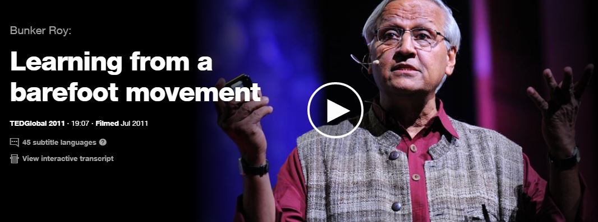

Myshkin Ingawale creates a new machine to test blood. He describes his project failures which would then pave the way for his innovation.

Julia Galef teaches us that perspective is everything and by changing lenses and challenging biases, we can overcome our differences in search for the truth.
Julia Galef teaches us that perspective is everything and by changing lenses and challenging biases, we can overcome our differences in search for the truth.

Author John Green, shares with us that learning does not stay in the classroom. For many, it takes place in the comfort of our own homes behind a computer screen.
Recommended Books
Field Guide